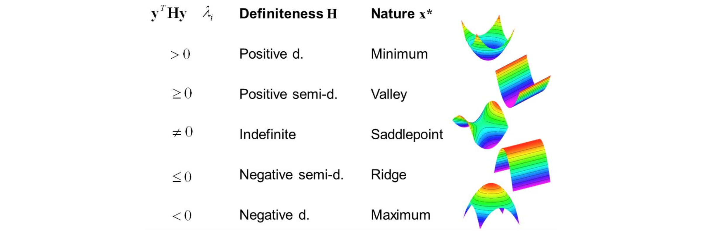
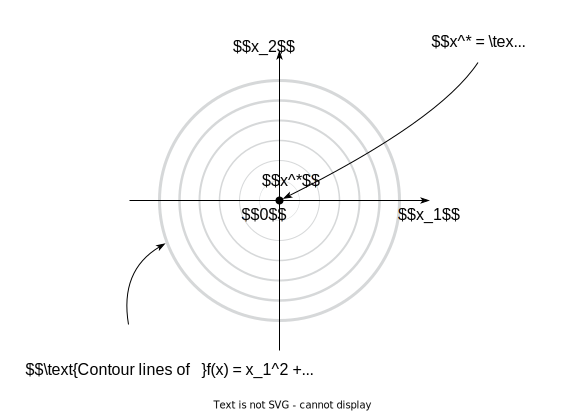

Optimality conditions. KKT
Background
Extreme value (Weierstrass) theorem
Let S \subset \mathbb{R}^n be a compact set and f(x) a continuous function on S. So that, the point of the global minimum of the function f (x) on S exists.

Lagrange multipliers
Consider simple yet practical case of equality constraints:
\begin{split} & f(x) \to \min\limits_{x \in \mathbb{R}^n} \\ \text{s.t. } & h_i(x) = 0, i = 1, \ldots, p \end{split}
The basic idea of Lagrange method implies the switch from conditional to unconditional optimization through increasing the dimensionality of the problem:
L(x, \nu) = f(x) + \sum\limits_{i=1}^p \nu_i h_i(x) \to \min\limits_{x \in \mathbb{R}^n, \nu \in \mathbb{R}^p} \\
General formulations and conditions
f(x) \to \min\limits_{x \in S}
We say that the problem has a solution if the budget set is not empty: x^* \in S, in which the minimum or the infimum of the given function is achieved.
Optimization on the general set S.
Direction d \in \mathbb{R}^n is a feasible direction at x^* \in S \subseteq \mathbb{R}^n if small steps along d do not take us outside of S.
Consider a set S \subseteq \mathbb{R}^n and a function f : \mathbb{R}^n \to \mathbb{R}. Suppose that x^* \in S is a point of local minimum for f over S, and further assume that f is continuously differentiable around x^*.
Then for every feasible direction d \in \mathbb{R}^n at x^* it holds that \nabla f(x^*)^\top d \geq 0.
If, additionally, S is convex then
\nabla f(x^*)^\top(x − x^*) \geq 0, \forall x \in S.

Unconstrained optimization
General case
Let f(x): \mathbb{R}^n \to \mathbb{R} be a twice differentiable function.
\tag{UP} f(x) \to \min\limits_{x \in \mathbb{R}^n}
If x^* - is a local minimum of f(x), then:
\tag{UP:Nec.} \nabla f(x^*) = 0
If f(x) at some point x^* satisfies the following conditions:
\tag{UP:Suff.} H_f(x^*) = \nabla^2 f(x^*) \succ (\prec) 0,
then (if necessary condition is also satisfied) x^* is a local minimum(maximum) of f(x).
Note, that if \nabla f(x^*) = 0, \nabla^2 f(x^*) = 0, i.e. the hessian is positive semidefinite, we cannot be sure if x^* is a local minimum (see Peano surface f(x,y) = (2x^2 - y)(y - x^2)).
Convex case
It should be mentioned, that in the convex case (i.e., f(x) is convex) necessary condition becomes sufficient. Moreover, we can generalize this result on the class of non-differentiable convex functions.
Let f(x): \mathbb{R}^n \to \mathbb{R}, then the point x^* is the solution of \text{(UP)} if and only if:
0_n \in \partial f(x^*)
One more important result for convex unconstrained case sounds as follows. If f(x): S \to \mathbb{R} - convex function defined on the convex set S, then: * Any local minima is the global one. * The set of the local minimizers S^* is convex. * If f(x) - strictly or strongly (different cases 😀) convex function, then S^* contains only one single point S^* = x^*.
Optimization with equality conditions
Intuition
Things are pretty simple and intuitive in unconstrained problem. In this section we will add one equality constraint, i.e.
\begin{split} & f(x) \to \min\limits_{x \in \mathbb{R}^n} \\ \text{s.t. } & h(x) = 0 \end{split}
We will try to illustrate approach to solve this problem through the simple example with f(x) = x_1 + x_2 and h(x) = x_1^2 + x_2^2 - 2.


Generally: in order to move from x_F along the budget set towards decreasing the function, we need to guarantee two conditions:
\langle \delta x, \nabla h(x_F) \rangle = 0
\langle \delta x, - \nabla f(x_F) \rangle > 0
Let’s assume, that in the process of such a movement we have come to the point where -\nabla f(x) = \nu \nabla h(x)
\langle \delta x, - \nabla f(x)\rangle = \langle \delta x, \nu\nabla h(x)\rangle = 0
Then we came to the point of the budget set, moving from which it will not be possible to reduce our function. This is the local minimum in the constrained problem :) 
So let’s define a Lagrange function (just for our convenience):
L(x, \nu) = f(x) + \nu h(x)
Then the point x^* is the local minimum of the problem described above, if and only if:
\begin{split} & \text{Necessary conditions} \\ & \nabla_x L(x^*, \nu^*) = 0 \text{ that's written above}\\ & \nabla_\nu L(x^*, \nu^*) = 0 \text{ budget constraint}\\ & \text{Sufficient conditions} \\ & \langle y , \nabla^2_{xx} L(x^*, \nu^*) y \rangle > 0,\\ & \forall y \neq 0 \in \mathbb{R}^n : \nabla h(x^*)^\top y = 0 \end{split}
We should notice that L(x^*, \nu^*) = f(x^*).
General formulation
\tag{ECP} \begin{split} & f(x) \to \min\limits_{x \in \mathbb{R}^n} \\ \text{s.t. } & h_i(x) = 0, \; i = 1,\ldots, p \end{split}
Solution
L(x, \nu) = f(x) + \sum\limits_{i=1}^p\nu_i h_i(x) = f(x) + \nu^\top h(x)
Let f(x) and h_i(x) be twice differentiable at the point x^* and continuously differentiable in some neighborhood x^* . The local minimum conditions for x \in \mathbb{R}^n, \nu \in \mathbb{R}^p are written as
\begin{split} & \text{ECP: Necessary conditions} \\ & \nabla_x L(x^*, \nu^*) = 0 \\ & \nabla_\nu L(x^*, \nu^*) = 0 \\ & \text{ECP: Sufficient conditions} \\ & \langle y , \nabla^2_{xx} L(x^*, \nu^*) y \rangle \geq 0,\\ & \forall y \neq 0 \in \mathbb{R}^n : \nabla h_i(x^*)^\top y = 0 \end{split}
Depending on the behavior of the Hessian, the critical points can have a different character.

Optimization with inequality conditions
Example
f(x) = x_1^2 + x_2^2 \;\;\;\; g(x) = x_1^2 + x_2^2 - 1
\begin{split} & f(x) \to \min\limits_{x \in \mathbb{R}^n} \\ \text{s.t. } & g(x) \leq 0 \end{split}



Thus, if the constraints of the type of inequalities are inactive in the constrained problem, then don’t worry and write out the solution to the unconstrained problem. However, this is not the whole story 🤔. Consider the second childish example
f(x) = (x_1 - 1)^2 + (x_2 + 1)^2 \;\;\;\; g(x) = x_1^2 + x_2^2 - 1
\begin{split} & f(x) \to \min\limits_{x \in \mathbb{R}^n} \\ \text{s.t. } & g(x) \leq 0 \end{split}


So, we have a problem:
\begin{split} & f(x) \to \min\limits_{x \in \mathbb{R}^n} \\ \text{s.t. } & g(x) \leq 0 \end{split}
Two possible cases:
| g(x) \leq 0 is inactive. g(x^*) < 0 | g(x) \leq 0 is active. g(x^*) = 0 |
|---|---|
| g(x^*) < 0 \nabla f(x^*) = 0 \nabla^2 f(x^*) > 0 |
Necessary conditions g(x^*) = 0 - \nabla f(x^*) = \lambda \nabla g(x^*), \lambda > 0 Sufficient conditions \langle y, \nabla^2_{xx} L(x^*, \lambda^*) y \rangle > 0, \forall y \neq 0 \in \mathbb{R}^n : \nabla g(x^*)^\top y = 0 |
Combining two possible cases, we can write down the general conditions for the problem:
\begin{split} & f(x) \to \min\limits_{x \in \mathbb{R}^n} \\ \text{s.t. } & g(x) \leq 0 \\ & \end{split}
Let’s define the Lagrange function:
L (x, \lambda) = f(x) + \lambda g(x)
The classical Karush-Kuhn-Tucker first and second order optimality conditions for a local minimizer x^*, stated under the linear independence constraint qualification (LICQ), can be written as follows:
If x^* is a local minimum of the problem described above, then there exists a unique Lagrange multiplier \lambda^* such that:
\begin{split} & (1) \; \nabla_x L (x^*, \lambda^*) = 0 \\ & (2) \; \lambda^* \geq 0 \\ & (3) \; \lambda^* g(x^*) = 0 \\ & (4) \; g(x^*) \leq 0\\ & (5) \; \forall y \in C(x^*): \langle y , \nabla^2_{xx} L(x^*, \lambda^*) y \rangle \geq 0 \\ & \text{where } C(x^*) = \{y \ \in \mathbb{R}^n | \nabla f(x^*) ^\top y \leq 0 \text{ and } \forall i \in I(x^*): \nabla g_i(x^*)^⊤ y \leq 0 \} \text{ is the critical cone.} \\ & I(x^*) = \{i| g_i(x^*) = 0\} \\ \end{split}
It’s noticeable, that L(x^*, \lambda^*) = f(x^*). Conditions \lambda^* = 0 , (1), (4) are the first scenario realization, and conditions \lambda^* > 0 , (1), (3) - the second one.
General formulation
\begin{split} & f_0(x) \to \min\limits_{x \in \mathbb{R}^n}\\ \text{s.t. } & f_i(x) \leq 0, \; i = 1,\ldots,m\\ & h_i(x) = 0, \; i = 1,\ldots, p \end{split}
This formulation is a general problem of mathematical programming.
The solution involves constructing a Lagrange function:
L(x, \lambda, \nu) = f_0(x) + \sum\limits_{i=1}^m \lambda_i f_i(x) + \sum\limits_{i=1}^p\nu_i h_i(x)
Karush-Kuhn-Tucker conditions
{% include tabs.html bibtex = ‘@misc{kuhn1951nonlinear, title={Nonlinear programming, in (J. Neyman, ed.) Proceedings of the Second Berkeley Symposium on Mathematical Statistics and Probability}, author={Kuhn, Harold W and Tucker, Albert W}, year={1951}, publisher={University of California Press, Berkeley} }’ file=‘/assets/files/kuhntucker.pdf’ inline = ‘True’%}
{% include tabs.html bibtex = ‘@article{karush1939minima, title={Minima of functions of several variables with inequalities as side constraints}, author={Karush, William}, journal={M. Sc. Dissertation. Dept. of Mathematics, Univ. of Chicago}, year={1939} }’ file=‘/assets/files/karush.pdf’ inline = ‘True’%}
Necessary conditions
Let x^*, (\lambda^*, \nu^*) be a solution to a mathematical programming problem with zero duality gap (the optimal value for the primal problem p^* is equal to the optimal value for the dual problem d^*). Let also the functions f_0, f_i, h_i be differentiable.
- $\nabla_x L(x^*, \lambda^*, \nu^*) = 0$
- $\nabla_\nu L(x^*, \lambda^*, \nu^*) = 0$
- $$ ^*_i , i = 1,,m$$
- $\lambda^*_i f_i(x^*) = 0, i = 1,\ldots,m$
- $f_i(x^*) \leq 0, i = 1,\ldots,m$
Some regularity conditions
These conditions are needed in order to make KKT solutions the necessary conditions. Some of them even turn necessary conditions into sufficient (for example, Slater’s). Moreover, if you have regularity, you can write down necessary second order conditions \langle y , \nabla^2_{xx} L(x^*, \lambda^*, \nu^*) y \rangle \geq 0 with semi-definite hessian of Lagrangian.
- Slater’s condition. If for a convex problem (i.e., assuming minimization, f_0,f_{i} are convex and h_{i} are affine), there exists a point x such that h(x)=0 and f_{i}(x)<0 (existance of a strictly feasible point), then we have a zero duality gap and KKT conditions become necessary and sufficient.
- Linearity constraint qualification If f_{i} and h_{i} are affine functions, then no other condition is needed.
- For other examples, see wiki.
Sufficient conditions
For smooth, non-linear optimization problems, a second order sufficient condition is given as follows. The solution x^{*},\lambda ^{*},\nu ^{*}, which satisfies the KKT conditions (above) is a constrained local minimum if for the Lagrangian,
L(x, \lambda, \nu) = f_0(x) + \sum\limits_{i=1}^m \lambda_i f_i(x) + \sum\limits_{i=1}^p\nu_i h_i(x)
the following conditions hold:
\begin{split} & \langle y , \nabla^2_{xx} L(x^*, \lambda^*, \nu^*) y \rangle > 0 \\ & \forall y \neq 0 \in \mathbb{R}^n : \nabla h_i(x^*)^\top y = 0, \nabla f_0(x^*) ^\top y \leq 0,\nabla f_j(x^*)^\top y \leq 0 \\ & i = 1,\ldots, p \quad \forall j: f_j(x^*) = 0 \end{split}
References
- Lecture on KKT conditions (very intuitive explanation) in course “Elements of Statistical Learning†@ KTH.
- One-line proof of KKT
- On the Second Order Optimality Conditions for Optimization Problems with Inequality Constraints
- On Second Order Optimality Conditions in Nonlinear Optimization